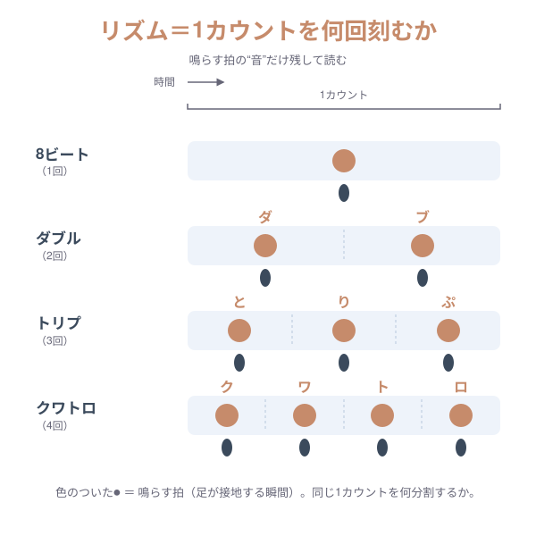
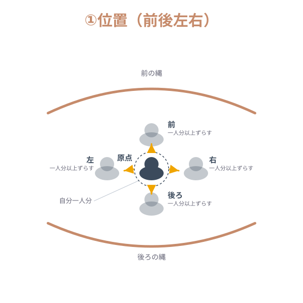
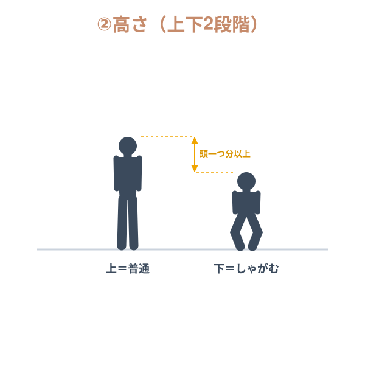
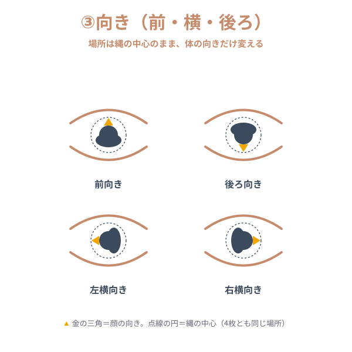

全部、ひとつのスキルでできています。
世界一のダブルダッチ。バズったゲーム。服のブランド。曲づくり。
くわしく
- ダブルダッチ 世界一（2025年 世界大会 優勝）
- フリーホラーゲーム『オトギリ』をプロデュース（累計8万ダウンロード／関連動画1,000万回超）
- アパレルブランド『FLEKKY FLEDDY』を主宰
- 音楽：Britain's Got Talent、NBA、世界大会の舞台で流れた曲は、自分で作曲・リミックスしたもの
バラバラに見えますが、中身はすべて 同じひとつのスキル でできています。それが、このページの話です。
ゴールから逆算して、分解して掛け合わせる。
「何をやるか」を見つける軸と、「どう作るか」の軸。
くわしく
① 逆算する（タテ）
なりたい姿 → そのために必要なもの → … → 今日やること。
- 例）優勝したい → 審査員が「この人が一番だ」と感じる → そのために必要な力は？ → だから今日の課題はこれ。
② 分解して掛け合わせる（ヨコ）
世の中のものや他のジャンルを分解し、原理を取り出して、自分のものに混ぜる。
①が「何をやるか」を出し、②が「それを作る」。この2つを回し続けることが、上達のエンジンになります。
リズムとは、1カウントを何回打つか。
同じ1拍を、何回に分けるか。それだけです。
くわしく
- 8ビート：1カウントに1回
- ダブル：2回（ダ・ブ）
- トリプ：3回（と・り・ぷ）
- クワトロ：4回（ク・ワ・ト・ロ）
音にして、声に出して、体で打つ。次の「組み合わせ」で実際に鳴らせます。

動き × リズム × 空間 を、自分で掛け合わせる。
3つの部品を選ぶと、組み合わせができます。音を鳴らして、体で合わせてみましょう。
体のつくり的に、そのままだとムリな組み合わせもあります。そういう時は、いい感じに崩して大丈夫。崩した瞬間に、それはもう「自分のオリジナル」です。
空間ってなに？（図で見る）



うまくなる人の、心の使い方。
技術と同じくらい、ここが大事です。
本気のスイッチ
1日1回は、本気を出す瞬間をつくる。だらだらの100回より、本気の1回。
「できない理由」を、全部つぶす
「できない」は分解できます。理由を一つずつつぶしていくと、最後に残るのは「できる」だけ。
緊張は、宝物
緊張できるのは、本気の証拠。たくさん失敗して立ち直るほど、「戻ってこられる」と分かって緊張は減ります。脳は、ワクワクと緊張を見分けられません。だから「ワクワクしている」と思えば大丈夫。
くわしく
だから、いい意味で たくさん失敗してください。失敗の話をたくさん持っている人ほど、強くて、面白い。
この先生も、初めての大会は緊張で吐きそうでした。衣装は七分丈。高校1年のころの話です。そこから、今があります。
これは、ダブルダッチだけの話ではありません。
ゴールから逆算して、分解して掛け合わせる。勉強にも、夢にも、なりたい姿にも効きます。
くわしく
今日やったのは、たったひとつ。分解して、掛け合わせる。これを、自分の好きなこと全部でやってみてください。別々のものが、つながって、掛け算で伸びていきます。